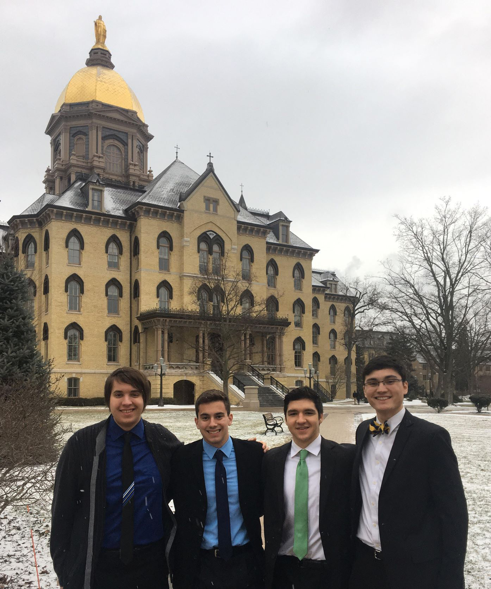
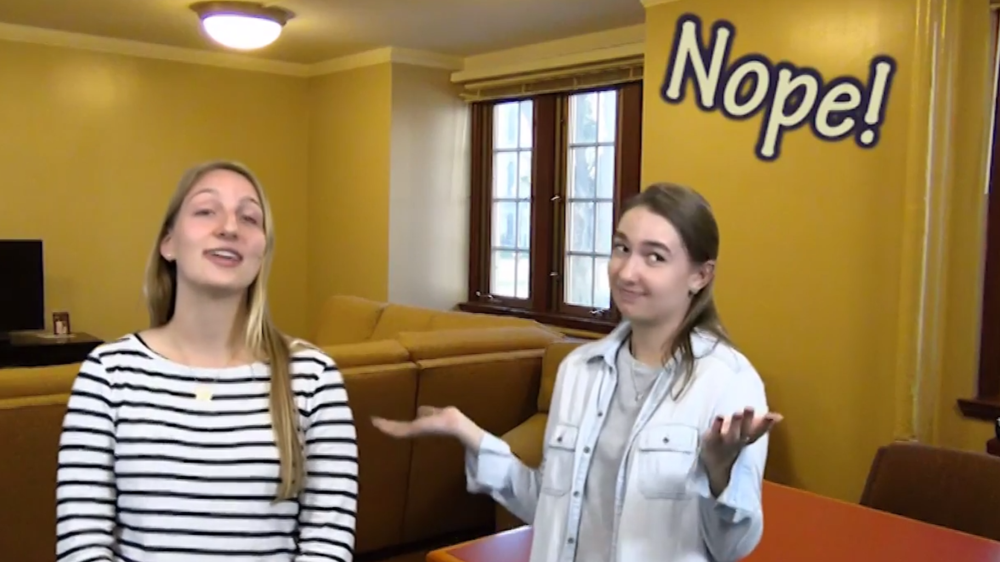

ABOUT ME
Hi! I am Randall Krueger, a junior at the University of Notre Dame, majoring in computer science. I will graduate in 2019 with a bachelor of science degree in engineering.
I've loved computers and the freedom that they give the developer since I was a young teenager. The first programming I ever attempted was modifying Ruby code for my favorite PC video game when I was 11 years old. When I saw that I could write lines of text that would completely change the way the game ran, I was hooked. Now, I'm proficient in C++, C, Python, and I am currently spending my free time studying JavaScript, so that I can add it to the list. I've used a multitude of other languages, programs, and services, most of which are documented on my resume, which you can find near the bottom of the page.

A photo of me with my friends. Left to right: Randall Krueger, Ethan teRiele, Nick Wilt, Tai Verbrugge
At the University of Notre Dame, I am writing programs that do anything from running small games to taking dynamic information from the web, to hosting my own TCP web server. The things you can do with programming astound me, and I am always looking forward to the next problem I can face, the next project I can tackle.
I am also very active in graphic design. I was appointed the first commissioner of apparel design in Dunne Hall, the newest men's residence hall on the campus of the University of Notre Dame. As we had no mascot or logos, it was my responsibility to create our crest and our flag that will be used for years to come at Notre Dame.
I have also worked on other projects, including Autodesk Maya animation, video editing, and Photoshop. I have become familiar with the majority of Adobe's creative suite, 3D modeling software, and even audio editing with Audacity. You can check out some of my work below.
Design Projects
View some of my graphic design and photo/video editing work.
Hover over each image to view its description; click to view associated media.
An animation created using Autodesk Maya 2017 to showcase skill at animation and the use of Maya’s dynamic features, including particles, nCloth, and fluids.

A video made for a writing and rhetoric course. I was a part of the script-creation and filming, and did all of the post-process editing, including the use of a green screen, music, and effects in Adobe Premiere Pro.
An image created using Autodesk Maya 2017. All modeling, lighting, texturing, and scene creation done by hand.
A website designed to allow Notre Dame students to choose a course schedule with ease. Filters through big data to find relevant data to the student. Developed for the Hesburgh Hackathon 2017.
Click below to view my resume or look at some of my projects hosted on GitHub.
A link to some of my coding projects hosted on GitHub. Further links to both GitLab and LinkedIn are located at the bottom of the page.